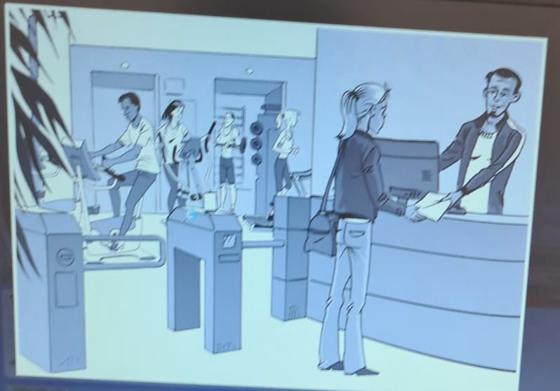

Série 28
Compréhension orale — image/audio, choix, et correction.
Q1
A1
3 pt
Correction: D — D
Écoutez les 4 propositions, choisissez celle qui correspond à l’image.

A.
B.
C.
D. Bonne réponse
Q2
A1
3 pt
Correction: C — C
Écoutez les 4 propositions, choisissez cellequi correspond à l’image.

A.
B.
C. Bonne réponse
D.
Q3
A1
3 pt
Correction: B — B
Écoutez les 4 propositions, choisissez celle qui correspond à l’image.
A.
B. Bonne réponse
C.
D.
Q4
A1
3 pt
Correction: A — A
Écoutez les 4 propositions, choisissez celle qui correspond à l’image.
A. Bonne réponse
B.
C.
D.
Q5
A2
9 pt
Correction: A — A
Écoutez les 4 propositions, choisissez celle qui correspond à l’image.
A. Bonne réponse
B.
C.
D.
Q6
A2
9 pt
Correction: B — B
Écoutez les 4 propositions, choisissez celle qui correspond à l’image.
A.
B. Bonne réponse
C.
D.
Q7
A2
9 pt
Correction: B — B
Écoutez les 4 propositions, choisissez celle qui correspond à l’image.
A.
B. Bonne réponse
C.
D.
Q8
A2
9 pt
Correction: C — Des courses pour un repas.
Écoutez le document sonore et la question. Choisissez la bonne réponse.
A. D’un atelier de cuisine.
B. D’une recette familiale.
C. Des courses pour un repas.Bonne réponse
D. Des horaires d’un magasin.
Q9
A2
9 pt
Correction: C — Les places sont trop chères.
Écoutez le document sonore et la question. Choisissez la bonne réponse.
A. La représentation est annulée.
B. Le spectacle est complet.
C. Les places sont trop chères.Bonne réponse
D. Les réservations sont terminées.
Q10
A2
9 pt
Correction: C — Les saisons.
Écoutez le document sonore et la question. Choisissez la bonne réponse.
A. La mode.
B. La nature.
C. Les saisons.Bonne réponse
D. Les vacances.
Q11
B1
15 pt
Correction: A — Elle a oublié un objet important.
Écoutez le document sonore et la question. Choisissez la bonne réponse.
A. Elle a oublié un objet important.Bonne réponse
B. Elle a raté son bus ce matin.
C. Elle doit s’absenter du bureau.
D. Elle est en retard à une réunion.
Q12
B1
15 pt
Correction: A — D’un nouveau produit.
Écoutez le document sonore et la question. Choisissez la bonne réponse.
A. D’un nouveau produit.Bonne réponse
B. De collègues de travail.
C. De leur d’habitation.
D. De leurs derniers achats.
Q13
B1
15 pt
Correction: A — Il y a un service internet.
Écoutez le document sonore et la question. Choisissez la bonne réponse.
A. Il y a un service internet.Bonne réponse
B. Le placement est libre.
C. On y propose des repas.
D. Son personnel est bilingue.
Q14
B1
15 pt
Correction: B — Elle a testé un nouveau bar.
Écoutez le document sonore et la question. Choisissez la bonne réponse.
A. Elle a rencontré des musiciens.
B. Elle a testé un nouveau bar.Bonne réponse
C. Elle a vu un spectacle gratuit.
D. Elle est allée en discothèque.
Q15
B1
15 pt
Correction: D — Pour lui donner des informations.
Écoutez le document sonore et la question. Choisissez la bonne réponse.
A. Pour l’inviter au restaurant.
B. Pour le remercier de son accueil.
C. Pour lui conseiller un logement.
D. Pour lui donner des informations.Bonne réponse
Q16
B1
15 pt
Correction: D — Pour annoncer un retard.
Écoutez le document sonore et la question. Choisissez la bonne réponse.
A. Pour annuler une réunion
B. Pour convoquer un collègue.
C. Pour changer un rendez-vous.
D. Pour annoncer un retard.Bonne réponse
Q17
B1
15 pt
Correction: A — Pour avoir un logement plus grand et peu cher.
Écoutez le document sonore et la question. Choisissez la bonne réponse.
A. Pour avoir un logement plus grand et peu cher.Bonne réponse
B. Pour louer des chambres à des étudiants.
C. Pour partager les tâches ménagères.
D. Pour rencontrer de nouvelles personnes.
Q18
B1
15 pt
Correction: A — Elle a été victime d’un vol.
Écoutez le document sonore et la question. Choisissez la bonne réponse.
A. Elle a été victime d’un vol.Bonne réponse
B. Elle a oublié son passeport.
C. Elle a perdu son sac à main.
D. Elle est tombée dans le métro.
Q19
B1
15 pt
Correction: A — De déjeuner ensemble.
Écoutez le document sonore et la question. Choisissez la bonne réponse.
A. De déjeuner ensemble.Bonne réponse
B. De faire une soirée.
C. De participer à un jeu.
D. De rencontrer un invité.
Q20
B2
21 pt
Correction: D — Visiter une ville.
Écoutez le document sonore et la question. Choisissez la bonne réponse.
A. Acheter un guide.
B. Réserver une table.
C. Trouver une chambre.
D. Visiter une ville.Bonne réponse
Q21
B2
21 pt
Correction: A — D’un projet de voyage.
Écoutez le document sonore et la question. Choisissez la bonne réponse.
A. D’un projet de voyage.Bonne réponse
B. D’un changement de travail.
C. D’un futur déménagement.
D. D’une sortie au cinéma.
Q22
B2
21 pt
Correction: A — D’attribuer à la lecture le statut de loisir.
Écoutez le document sonore et la question. Choisissez la bonne réponse.
A. D’attribuer à la lecture le statut de loisir.Bonne réponse
B. De favoriser la lecture en autonomie.
C. De limiter la lecture d’histoires illustrées.
D. De sélectionner des lectures classiques.
Q23
B2
21 pt
Correction: B — Elle a vite appris son métier.
Écoutez le document sonore et la question. Choisissez la bonne réponse.
A. Elle a beaucoup d’expérience.
B. Elle a vite appris son métier.Bonne réponse
C. Elle aimer prendre des risques.
D. Elle sait diriger ses collègues.
Q24
B2
21 pt
Correction: C — De procédés de recyclage.
Écoutez le document sonore et la question. Choisissez la bonne réponse.
A. De conservation des plantes.
B. De nettoyage d’espaces verts.
C. De procédés de recyclage.Bonne réponse
D. De techniques de culture.
Q25
B2
21 pt
Correction: C — Une paire de lunettes.
Écoutez le document sonore et la question. Choisissez la bonne réponse.
A. Une paire de boucles d’oreille.
B. Une paire de chaussures.
C. Une paire de lunettes.Bonne réponse
D. Une paire de skis.
Q26
B2
21 pt
Correction: B — Ils partent à la montagne
Écoutez le document sonore et la question. Choisissez la bonne réponse.
A. Ils annulent leurs activités
B. Ils partent à la montagneBonne réponse
C. Ils préfèrent sortir la nuit
D. Ils sortent en train à l'extérieur
Q27
B2
21 pt
Correction: D — Il récupère les cheveux de ses clients pour nettoyer les océans.
Écoutez le document sonore et la question. Choisissez la bonne réponse.
A. Il commercialise des filets de pêche fabriqués partir de cheveux.
B. Il dénonce la toxicité de certains traitements pour les cheveux.
C. Il propose un produit pour protéger les cheveux des particuliers.
D. Il récupère les cheveux de ses clients pour nettoyer les océans.Bonne réponse
Q28
B2
21 pt
Correction: A — Adopter un mode de vie collectif responsable.
Écoutez le document sonore et la question. Choisissez la bonne réponse.
A. Adopter un mode de vie collectif responsable.Bonne réponse
B. Construire un réseau d’assainissement des eaux.
C. Faire la promotion de logements écologiques.
D. Mener une politique d’aménagement des villes.
Q29
B2
21 pt
Correction: C — Les partenaires européens trouvent le projet hasardeux.
Écoutez le document sonore et la question. Choisissez la bonne réponse.
A. Le directeur nourrit de plus grandes ambitions pour l’entreprise.
B. Le groupe a décidé de restreindre son domaine d’intervention.
C. Les partenaires européens trouvent le projet hasardeux.Bonne réponse
D. Les ressources financières de l’entreprise sont en baisse.
Q30
C1
26 pt
Correction: D — Journaliste.
Écoutez le document sonore et la question. Choisissez la bonne réponse.
A. Metteur en scène.
B. Explorateur.
C. Photographe.
D. Journaliste.Bonne réponse
Q31
C1
26 pt
Correction: B — Étudier les trajectoires des déchets cosmiques.
Écoutez le document sonore et la question. Choisissez la bonne réponse.
A. Comparer les mouvements des galaxies.
B. Étudier les trajectoires des déchets cosmiques.Bonne réponse
C. Prévenir les risques de chute de météorites.
D. S’entraîner pour des voyages interplanétaires.
Q32
C1
26 pt
Correction: D — Le manque d’estime de soi.
Écoutez le document sonore et la question. Choisissez la bonne réponse.
A. L’absence de formes d’altruisme.
B. La place accordée à l’apparence.
C. La superficialité des relations.
D. Le manque d’estime de soi.Bonne réponse
Q33
C1
26 pt
Correction: B — Elle possède un nom inapproprié.
Écoutez le document sonore et la question. Choisissez la bonne réponse.
A. Elle engendre une peur irrationnelle.
B. Elle possède un nom inapproprié.Bonne réponse
C. Son champ d’action est restreint.
D. Son développement est imprévisible.
Q34
C1
26 pt
Correction: A — Sa clientèle s’est diversifiée.
Écoutez le document sonore et la question. Choisissez la bonne réponse.
A. Sa clientèle s’est diversifiée.Bonne réponse
B. Sa production s’est accélérée.
C. Son estimation s’est complexifiée.
D. Son prix en dollar c’est effondré.
Q35
C1
26 pt
Correction: C — C’est un symbole fort de cette province.
Écoutez le document sonore et la question. Choisissez la bonne réponse.
A. C’est un exemple de réussite par le sport.
B. C’est un modèle rare de mixité culturelle.
C. C’est un symbole fort de cette province.Bonne réponse
D. C’est une référence pour son style de jeu.
Q36
C2
33 pt
Correction: C — Ils s’appuient sur des théories éducatives.
Écoutez le document sonore et la question. Choisissez la bonne réponse.
A. Ils favorisent l’esprit de compétition.
B. Ils influent sur les motivations des élèves.
C. Ils s’appuient sur des théories éducatives.Bonne réponse
D. Ils sont adoptés par les enseignants.
Q37
C2
33 pt
Correction: B — La dégradation d’un site naturel rare.
Écoutez le document sonore et la question. Choisissez la bonne réponse.
A. L’industrialisation galopante des rives.
B. La dégradation d’un site naturel rare.Bonne réponse
C. La pollution des nappes phréatiques.
D. La raréfaction des énergies fossiles.
Q38
C2
33 pt
Correction: A — Mettre en place toutes les infrastructures d’accueil.
Écoutez le document sonore et la question. Choisissez la bonne réponse.
A. Mettre en place toutes les infrastructures d’accueil.Bonne réponse
B. Prendre en compte des aspects financiers du projet.
C. Réussir l’intégration de la main-d’œuvre étrangère.
D. Susciter l’adhésion de tous les habitants concernés.
Q39
C2
33 pt
Correction: D — L’utilisation systématique d’emballage.
Écoutez le document sonore et la question. Choisissez la bonne réponse.
A. L’absence d’éthique de certains produits.
B. La qualité relative des aliments labellisés bio.
C. L’influence de la publicité sur le choix du client.
D. L’utilisation systématique d’emballage.Bonne réponse